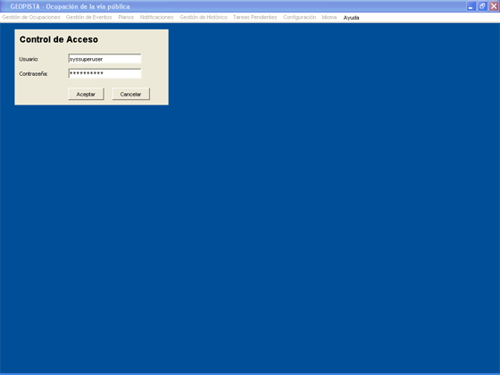

Se han definido en el sistema una serie de perfiles de usuario, en función de los cuales, el usuario tendrá restringido el acceso a las opciones de menú, así como a los cambios de estado de un expediente durante su tramitación.
Al inicio de la aplicación se muestra la ventana de validación de usuario, donde éste tendrá que insertar el usuario y contraseña.

Si el nombre de usuario y contraseña se corresponden con la de un usuario con permisos de administración, el usuario podrá acceder a la aplicación de Gestión de Licencias de Actividad, pudiendo realizar las operaciones permitidas a su perfil de usuario. Si la autenticación es negativa, es decir, no existe un usuario con el nombre y contraseña introducidos, el usuario no podrá acceder a la aplicación de Gestión de Licencias de Ocupación de la Vía Pública.
La administración de usuarios se llevará a cabo a través de la aplicación de Administración de Usuarios y Dominios.
Una vez validado el usuario, se mostrará un pantallazo con aquellos eventos pendientes de revisar y Notificaciones pendientes de notificar de todas las Licencias de Ocupación de la Vía Pública del sistema.